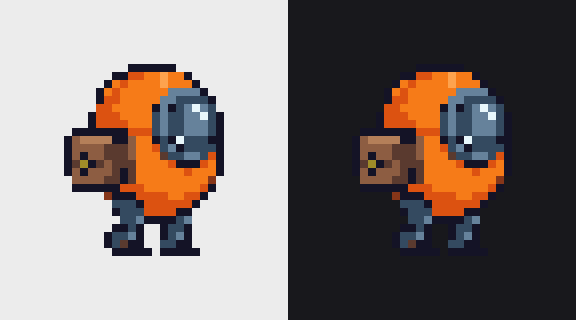

문제 해결 (How-to 가이드)
생성 이미지를 픽셀 에셋으로 만들기
이 가이드를 따라 하면 이미지 모델이 그린 "픽셀 아트처럼 보이는 그림"을 게임 해상도에 정확히 맞는 진짜 픽셀 에셋으로 바꿀 수 있어요. 게임 안에서 흐려지거나 에셋마다 픽셀 크기가 달라 보이는 문제를 없애요.
이럴 때 쓰세요
- 생성한 픽셀 아트를 게임에 넣었더니 흐리거나 뭉개질 때
- 에셋마다 픽셀 한 칸의 크기가 달라 보일 때
- 스프라이트 테두리에 배경색이 남을 때
원인은 이미지 모델이 픽셀 아트를 그리지 못하기 때문이에요. 모델은 픽셀 아트의 모양을 흉내 낸 고해상도 그림을 내놓아요. 하네스가 실제로 잰 값이에요(harness/skills/gf-assets-pixel/SKILL.md).
| 기대한 것 | 실제로 받은 것 |
|---|---|
| 정수 픽셀 격자 | 512픽셀 그림에 칸 하나가 5.12픽셀 |
| 색 십여 개 | 색 22,180개 |
| 요청한 32×32 | 100×100칸 |
그래서 생성물은 원본으로만 다루고, 아래 후처리 사슬을 통과한 것만 게임에 넣어요.
원본 ──► 크로마 ──► 격자 맞춤 ──► 팔레트 적용 ──► 검사 ──► 게임용 에셋
assets/raw/pix keyed pixel assets/game captures/inspect
준비하기
- 게임 프로젝트의 스타일이
pixel이어야 해요. - 아트 디렉션에서 캐릭터의 세로 크기(예: 24픽셀)와 색 수를 정해 두세요.
- 아래 명령의
gf는 게임 폴더를 지정한 함수예요. 경로는 모두 게임 폴더 기준이에요. - 비용: 1단계의 생성만 유료예요(이미지 1장 약 $0.08). 2단계부터는 무료예요.
에셋이 여러 개라면 가장 눈에 띄는 하나로 사슬 전체를 먼저 통과시키고, 사용자가 그 결과를 승인한 뒤에 나머지를 만드세요.
1. 단색 배경에 생성하기
배경색은 그림에 없는 색으로 정하세요. 보통 마젠타(#FF00FF)를 쓰고, 그림에 분홍이나 보라가 있으면 초록(#00FF00)을 쓰세요. 먼저 --dry-run으로 추정 비용을 확인하세요.
gf gen image "<대상>, pixel art, chunky large pixels, limited 16 colour palette, hard pixel edges, dark outline, side view, single subject centered with margin, flat solid pure magenta #FF00FF background, no shadow, no ground, no text" \
--aspect 1:1 --resolution 0.5K --out assets/raw/pix --name <이름> --dry-run
cost_usd를 본 뒤 --dry-run을 빼고 실행하세요. 기준 화면을 참조 이미지로 주려면 gf gen image 대신 gf gen edit "<프롬프트>" --image <기준 화면>을 쓰세요. 기본 image.concept 모델은 이미지 입력을 받지 않아요.
처음부터 단순하게 요청하세요. 주름이나 무늬가 많은 그림은 24픽셀로 줄이면 얼룩이 돼요. 하네스 검증에서 통한 문구예요: big flat colour areas with only one shadow tone, no small details, thick dark outline, very chunky huge pixels.
2. 배경 빼기
--hard를 주면 투명도가 0 아니면 255로만 나와요. 픽셀 아트에는 반투명 가장자리가 없어야 해요.
gf post chroma assets/raw/pix/<이름>.png --key auto --hard --out assets/raw/keyed
결과의 key가 의도한 배경색과 비슷한지 확인하세요. 다르면 --key '#FF00FF'처럼 직접 주세요.
3. 격자에 맞춰 줄이기
대상의 종류에 따라 옵션이 달라요.
| 대상 | 옵션 | 이유 |
|---|---|---|
| 캐릭터, 소품 | --trim --height <세로 픽셀> |
모델은 요청한 크기를 지키지 않아요. 보이는 부분만 잘라 세로를 맞추고 가로는 비율대로 둬요 |
| 화면을 꽉 채우는 타일 | --size 32x32 |
크기를 고정해요. 비율이 다르면 그림이 늘어나므로 캐릭터에는 쓰지 마세요 |
| 애니메이션 프레임 | --cell <칸 크기> |
모든 프레임에 같은 값을 줘야 크기가 흔들리지 않아요 |
gf post pixel-snap assets/raw/keyed/<이름>.png --trim --height 24 --out assets/raw/pixel
결과의 cell(원본 몇 픽셀이 한 칸이 됐는지)을 적어 두세요. 같은 캐릭터의 애니메이션을 만들 때 써요.
옵션 없이 실행하면 격자를 자동으로 찾아요. 생성 그림의 격자는 정수가 아니어서 신뢰도가 0.25 미만이면 실패해요. 자동 감지에 기대지 마세요.
4. 공용 팔레트 입히기
게임의 모든 에셋이 같은 팔레트를 써야 한 게임처럼 보여요. 팔레트가 아직 없으면 채택한 그림들에서 함께 뽑으세요.
gf post palette extract assets/raw/pixel --colors 16 --out design/palette.json
gf post palette apply assets/raw/pixel/<이름>.png --palette design/palette.json --out assets/game/sprites
- 그림을 바꾸면 팔레트를 다시 뽑고 전부에 다시 입히세요.
- 작은 스프라이트에는
--dither를 쓰지 마세요. 지저분해져요.
5. 검사하기
숫자 검사와 눈 검사를 함께 하세요.
gf post inspect assets/game/sprites/<이름>.png --check captures/inspect/<이름>.png --check-scale 8
{"ok": true, "files": ["captures/inspect/player.png"], "cost_usd": 0.0, "images": [{"file": "assets/game/sprites/player.png", "size": [20, 24], "alpha_coverage": 0.7083, "partial_alpha": 0.0, "unique_colours": 12, "integer_scale": 1, "pixel_art": true, "reasons": []}]}
pixel_art가 true여야 해요. false면 reasons가 원인을 말해 줘요. 그다음 확인 이미지(captures/inspect/<이름>.png)를 직접 열어 보세요.

결과 확인하기
네 가지가 모두 맞으면 통과예요(harness/skills/gf-assets-pixel/SKILL.md의 통과 기준).
gf post inspect가pixel_art: true를 내요.- 확인 이미지의 밝은 쪽과 어두운 쪽 모두에서 테두리에 배경색이 없고, 외곽선이 끊기지 않고, 형태가 읽혀요.
- 1배 크기에서 무엇인지 알아볼 수 있어요. 확대해야만 알아볼 수 있으면 더 단순한 형태로 다시 생성하세요.
- 기준 화면 옆에 놓았을 때 같은 게임의 그림으로 보여요.
게임에 넣은 뒤에는 gf check assets, gf engine test, gf engine capture로 게임 안에서도 흐려지지 않는지 확인하세요.
잘 안 될 때
| 증상 | 원인 | 해결 |
|---|---|---|
| 줄이니 얼룩이 됐다 | 원본에 주름, 패널, 명암 줄이 많다 | 큰 색면과 음영 한 단계로 다시 생성 |
| 가는 가시나 줄무늬가 사라지고 갈색으로 뭉쳤다 | 1배에서 살아남지 못하는 형태다 | 굵은 덩어리와 뚜렷한 색면으로 다시 생성 |
| 다른 그림의 색이 엉뚱한 곳에 박혔다 | 팔레트를 여러 그림에서 뽑았다 | 확인 이미지에서 찾아 그 그림을 고치거나 팔레트의 색 수를 조정 |
| 눈의 흰자처럼 작은 밝은 면이 사라졌다 | 팔레트를 뽑을 때 면적이 작은 색이 밀려났다 | 하네스를 만들 때 겪은 문제예요(세션 기록). 지금의 gf post palette extract는 넓게 퍼진 색 무리부터 나누는 방식이에요(harness/tools/gf/post/palette.py). 그래도 사라지면 --colors를 늘리세요 |
더 보기
- 처음부터 끝까지 따라 하기: 첫 게임 실행하고 캐릭터 넣기
- 걷는 동작 만들기: 스프라이트 애니메이션 만들기
- 원문:
harness/skills/gf-assets-pixel/SKILL.md